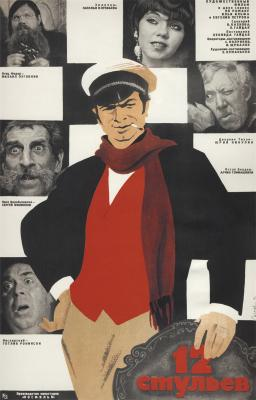

12 стульев

В город Старгород приходит «сын турецкоподданного» — авантюрист Остап Бендер (полное имя Остап-Сулейман-Берта-Мария-Бендер-бей). Там он встречает дворника Тихона. Тот рассказывает про своего бывшего барина, а в прошлом предводителя дворянства — Ипполита (Кису) Матвеевича Воробьянинова, якобы эмигрировавшего в Париж после революции 1917 года. Неожиданно в дворницкой появляется и сам Ипполит Матвеевич, как оказалось, ставший регистратором отдела ЗАГСа в уездном городе N. Там, перед своей смертью его тёща рассказала, что в сиденье одного из двенадцати стульев их гостиного гарнитура, изъятого во время революционного ареста, она зашила свои бриллианты стоимостью в 150 тысяч рублей. Воробьянинов вернулся в Старгород, чтобы их найти. Остап берётся помочь Ипполиту Матвеевичу за 40 процентов найденного. Бывший дворянин не сразу, но заключает с авантюристом концессию.
Назад Трейлер Википедия